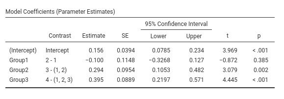

Rosetta store: contrasts
keywords jamovi, SPSS, R, contrasts, comparisons, planned comparisons, LMATRIX, contr.sum, emmeans
0.9.5
Introduction
Here you can find comparisons of results obtained in GAMLj, jamovi (jmv), pure R, and SPSS. When not explicitely discussed, the code of different software is written with the aim of obtaing identical results across programs.
Example data are here
or in the jamovi
data library, under General Analysis for Linear Models (3),
named fivegroups. One continuous dependent variable, one
factor with 4 groups.
Unfortunately, contrasts coding schemes get different names in different publications and they are implemented in different ways across software. Things can get a bit confusing because of this. For partially overlapping coding scheme definitions see UCLA idre web site, SPSS manual and Cohen, J., Cohen, P., West, S. G., & Aiken, L. S. (2013). Applied multiple regression/correlation analysis for the behavioral sciences. Routledge. If you have familiarity with python, you can compare results also with python statmodels results
Software
We use jamovi,
SPSS and R. In jamovi
we compare the ANOVA module in jamovi
jmv and the GAMLj module.
In R we use pure R, meaning that we estimate the contrast
comparisons by estimating a linear model (lm() in
particular), with the categorical variable properly coded. For more
straigthforward estimation we employ emmeans R module. In
SPSS we use the UNIVARIATE module.
More technical details
Contrasts can be computed in two different ways:
As the coefficients of a model where the categorical variable(s) is coded accordingly to a coding scheme. jamovi GAMLj and standard R use this strategy. Understanding this approach opens to the possibility to test contrasts-based hypotheses in complex models, such as when interactions are involved, mediatiated effects or simple effects are of interest.
As a comparison between sets of means tested with model-derived standard errors. jamovi ANOVA,
emmeansR and SPSS use this approach. This approach is simpler and straightforward. In simple models, it works perfectly fine.As a comparison between groups means, with group specific standard errors. None of the software used here uses this approach, so we do not deal with it here.
The first two approaches give the same results if the contrasts are defined in the same way. However, the contrast coding displayed by the software may be different. The majority of software prints out the contrast matrix, which contains the coding scheme describing the tested comparisons. R model estimation requires the model matrix, which is generally different from the contrast matrix and represents the weights associated with the dummy variables needed to cast a categorical variable into the linear model estimating the contrasts. How they are related and how to obtain one from the other is explained in contrast vs model matrix details
Furthermore, in simple models (such as one-way ANOVA), the two first approaches give exactly the same results. When models get more complex, results may diverge across software because they estimate different things. The present results apply to one-way ANOVA, balanced factorial ANOVA with centered coding scheme, ANCOVA models with continuous covariates centered to their means.
Terminology
To interpret a contrast, it is often necessary to refer to “the first group” or “subsequent groups”. The order is always defined as the alphanumeric order.
Furthermore, different software packages have different rounding rules, so we say “the same results” when results agree apart for decimal rounding.
Contrast: Deviation
Meaning
Definition: Compares each group mean to the grand mean. The grand mean is the mean of the groups means. The first group is omitted


SPSS
Please note that SPSS default sets the last group as reference group
(the omitted group), thus to obtain the same results as before, we
should set /CONTRAST(Group)=Deviation(1), mind the “1”“,
which corresponds to”first” in the GUI options.
UNIANOVA Score BY Group
/CONTRAST(Group)=Deviation(1)
/METHOD=SSTYPE(3)
/INTERCEPT=INCLUDE
/PRINT=TEST(LMATRIX)
/CRITERIA=ALPHA(.05)
/DESIGN=Group.

R
In R, deviation contrast is called contr.sum. The
function defaults to omitting the last group, so we reverse it to omit
the first.
file<-"../data/rosetta.contrasts.csv"
dat<-read.csv2(file,stringsAsFactors = F)
dat$Group<-factor(dat$Group)
dat$Score<-as.numeric(dat$Score)
### reverse contrast sum ###
contrasts(dat$Group)<-matrix(rev(contr.sum(4)),ncol=3)
contrasts(dat$Group)## [,1] [,2] [,3]
## 1 -1 -1 -1
## 2 1 0 0
## 3 0 1 0
## 4 0 0 1##
## Call:
## lm(formula = Score ~ Group, data = dat)
##
## Residuals:
## Min 1Q Median 3Q Max
## -2.06311 -0.27955 -0.00111 0.28531 1.65733
##
## Coefficients:
## Estimate Std. Error t value
## (Intercept) 0.15619 0.03936 3.969
## Group1 -0.24675 0.07193 -3.430
## Group2 0.09692 0.06670 1.453
## Group3 0.29647 0.06670 4.445
## Pr(>|t|)
## (Intercept) 0.000107 ***
## Group1 0.000760 ***
## Group2 0.148092
## Group3 0.000016 ***
## ---
## Signif. codes:
## 0 '***' 0.001 '**' 0.01 '*' 0.05 '.' 0.1 ' ' 1
##
## Residual standard error: 0.5109 on 166 degrees of freedom
## Multiple R-squared: 0.1473, Adjusted R-squared: 0.1319
## F-statistic: 9.557 on 3 and 166 DF, p-value: 0.000007399## 1 2 3
## 0.009545455 -0.090555556 0.253111111
## 4
## 0.452666667R emmeans
To employ emmeans package, we first estimate the model
(which coding system we use does not matter), then we run the function
emm<-emmeans(model,specs), where specs is
the factor for which we want to compare the means, and then we apply
contrast(emm,contrast_type) to the emmeans object.
contrast_type is a string equal to the contrast function we
want to use. We add adjust="none" to obtain the same
p-values as in the previous analyses, but any adjustment supported by
emmeans can be applied here. If we omit the
adjust option, the default multiplicity adjustment method
is “fdr” , cf. emmeans
package.
The deviation contrast it is named eff in
emmeans.
library(emmeans)
model<-lm(Score~Group,data=dat)
emm<-emmeans(model,~Group)
contrast(emm,"eff",reverse=T,adjust = "none")## contrast estimate SE df t.ratio
## Group1 effect -0.1466 0.0672 166 -2.183
## Group2 effect -0.2467 0.0719 166 -3.430
## Group3 effect 0.0969 0.0667 166 1.453
## Group4 effect 0.2965 0.0667 166 4.445
## p.value
## 0.0305
## 0.0008
## 0.1481
## <.0001Please notice that emmeans computes all possible
comparisons: group 1 against the grand mean, group 2 against the grand
mean, etc.
Contrast: Simple & Dummy
Meaning
Definition: Compares each group with the first group.
jamovi GAMLj GLM
This is GAMLj default (since version 1.5). The contrasts in GAMLj is identical to the ANOVA module.
SPSS
Please note that SPSS default sets the last group as reference group,
thus to obtain the same results as before, we should set
/CONTRAST(Group)=Simple(1), mind the “1”“, which
corresponds to”first” in the GUI options.
UNIANOVA Score BY Group
/CONTRAST(Group)=Simple(1)
/METHOD=SSTYPE(3)
/INTERCEPT=INCLUDE
/PRINT=TEST(LMATRIX)
/CRITERIA=ALPHA(.05)
/DESIGN=Group.
Results:

R
In R, simple contrast can be obtained as follows:
#### contrast=simple #######
dat$Group<-factor(dat$Group)
k<-4 # number of levels
contrasts(dat$Group)<-contr.treatment(k)-(1/k)
contrasts(dat$Group)## 2 3 4
## 1 -0.25 -0.25 -0.25
## 2 0.75 -0.25 -0.25
## 3 -0.25 0.75 -0.25
## 4 -0.25 -0.25 0.75##
## Call:
## lm(formula = Score ~ Group, data = dat)
##
## Residuals:
## Min 1Q Median 3Q Max
## -2.06311 -0.27955 -0.00111 0.28531 1.65733
##
## Coefficients:
## Estimate Std. Error t value
## (Intercept) 0.15619 0.03936 3.969
## Group2 -0.10010 0.11481 -0.872
## Group3 0.24357 0.10831 2.249
## Group4 0.44312 0.10831 4.091
## Pr(>|t|)
## (Intercept) 0.000107 ***
## Group2 0.384538
## Group3 0.025846 *
## Group4 0.0000668 ***
## ---
## Signif. codes:
## 0 '***' 0.001 '**' 0.01 '*' 0.05 '.' 0.1 ' ' 1
##
## Residual standard error: 0.5109 on 166 degrees of freedom
## Multiple R-squared: 0.1473, Adjusted R-squared: 0.1319
## F-statistic: 9.557 on 3 and 166 DF, p-value: 0.000007399If one need the uncentered dummy coding, it can be obtained
in R using contr.treatment(k).
R emmeans
The simple contrast can be achieved in emmeans with
dunnett.
## contrast estimate SE df t.ratio
## Group2 - Group1 -0.100 0.115 166 -0.872
## Group3 - Group1 0.244 0.108 166 2.249
## Group4 - Group1 0.443 0.108 166 4.091
## p.value
## 0.3845
## 0.0258
## 0.0001Simple vs Dummy
GAMLj distinguishes between
simple and dummy coding schemes. They give equivalent
results in means comparisons, simple effects, and contrast coefficients.
The only difference is that the Dummy is not centered, and
so when the codes are involved in interactions, the effects of the other
variables have different meaning. In the presence of interactions, when
simple is used, the other variables effects are computed
averaging across the sample; when dummy is used, the other
variables effects are computed for the reference group (the first group)
defined by the dummy coding.
Contrast: Repeated
Definition: Compares each group with the subsequent group
jamovi ANOVA
Results:
jamovi GAMLj GLM
SPSS
UNIANOVA Score BY Group
/CONTRAST(Group)=REPEATED
/METHOD=SSTYPE(3)
/INTERCEPT=INCLUDE
/PRINT=TEST(LMATRIX)
/CRITERIA=ALPHA(.05)
/DESIGN=Group.

R
R does not have an out-of-the-box contrast equivalent to
repeated contrast. One can, howerver, uses the
contr.sdif() function in MASS package. As
compared with jamovi
and SPSS the comparisons are in the opposite direction, so we simply
multiply the code by -1 (t-tests and p-values do not depend on
this):
## 2-1 3-2 4-3
## 1 0.75 0.5 0.25
## 2 -0.25 0.5 0.25
## 3 -0.25 -0.5 0.25
## 4 -0.25 -0.5 -0.75##
## Call:
## lm(formula = Score ~ Group, data = dat)
##
## Residuals:
## Min 1Q Median 3Q Max
## -2.06311 -0.27955 -0.00111 0.28531 1.65733
##
## Coefficients:
## Estimate Std. Error t value
## (Intercept) 0.15619 0.03936 3.969
## Group2-1 0.10010 0.11481 0.872
## Group3-2 -0.34367 0.11424 -3.008
## Group4-3 -0.19956 0.10770 -1.853
## Pr(>|t|)
## (Intercept) 0.000107 ***
## Group2-1 0.384538
## Group3-2 0.003036 **
## Group4-3 0.065681 .
## ---
## Signif. codes:
## 0 '***' 0.001 '**' 0.01 '*' 0.05 '.' 0.1 ' ' 1
##
## Residual standard error: 0.5109 on 166 degrees of freedom
## Multiple R-squared: 0.1473, Adjusted R-squared: 0.1319
## F-statistic: 9.557 on 3 and 166 DF, p-value: 0.000007399… and we’re just fine.
R emmeans
The repeated contrast can be achieved in emmeans with
consec. To align the results to the jamovi
SPSS, we should reverse the contrast coding, with the option
reverse.
model<-lm(Score~Group,data=dat)
emm<-emmeans(model,~Group)
contrast(emm,"consec",adjust = "none",reverse=T)## contrast estimate SE df t.ratio
## Group1 - Group2 0.100 0.115 166 0.872
## Group2 - Group3 -0.344 0.114 166 -3.008
## Group3 - Group4 -0.200 0.108 166 -1.853
## p.value
## 0.3845
## 0.0030
## 0.0657Contrast: Polynomial
Definition: Test polynomial (linear, quadratic, cubic, etc.) trends in the means pattern


jamovi GAMLj GLM

SPSS
UNIANOVA Score BY Group
/CONTRAST(Group)=POLYNOMIAL
/METHOD=SSTYPE(3)
/INTERCEPT=INCLUDE
/PRINT=TEST(LMATRIX)
/CRITERIA=ALPHA(.05)
/DESIGN=Group.

R
R has an out-of-the-box contrast named contr.poly()
contrast. It works like a sharm.
##
## Call:
## lm(formula = Score ~ Group, data = dat)
##
## Residuals:
## Min 1Q Median 3Q Max
## -2.06311 -0.27955 -0.00111 0.28531 1.65733
##
## Coefficients:
## Estimate Std. Error t value
## (Intercept) 0.15619 0.03936 3.969
## Group.L 0.37410 0.07702 4.857
## Group.Q 0.14983 0.07871 1.904
## Group.C -0.13145 0.08037 -1.636
## Pr(>|t|)
## (Intercept) 0.000107 ***
## Group.L 0.00000273 ***
## Group.Q 0.058702 .
## Group.C 0.103809
## ---
## Signif. codes:
## 0 '***' 0.001 '**' 0.01 '*' 0.05 '.' 0.1 ' ' 1
##
## Residual standard error: 0.5109 on 166 degrees of freedom
## Multiple R-squared: 0.1473, Adjusted R-squared: 0.1319
## F-statistic: 9.557 on 3 and 166 DF, p-value: 0.000007399… and we can sleep like babies.
R emmeans
The poly contrast has a direct implementation in
emmeans with poly.
## contrast estimate SE df t.ratio p.value
## linear 1.673 0.344 166 4.857 <.0001
## quadratic 0.300 0.157 166 1.904 0.0587
## cubic -0.588 0.359 166 -1.636 0.1038Contrast: Difference
Difference and helmert contrasts are great source of confusion when one is comparing different software results. SPSS and jamovi use the same definition for them, but R has a different implementation. Different authors uses different definitions, so be aware of which comparisons are implemented.
Definition: Compares each group with the average of previous groups.
This is sometimes named Reverse Helmert Coding , cf. UCLA idre web site.

jamovi GAMLj GLM

SPSS
UNIANOVA Score BY Group
/CONTRAST(Group)=DIFFERENCE
/METHOD=SSTYPE(3)
/INTERCEPT=INCLUDE
/PRINT=TEST(LMATRIX)
/CRITERIA=ALPHA(.05)
/DESIGN=Group.
R
The t-tests and p-values associated with the difference
contrast can be obtained in R using the
contr.helmert() function. Despite the name,
contr.helmert() implements what is usually named “Reversed
Helmert contrast”. Obviously, this is perfectly fine (cf. An
R and S-Plus Companion to Applied Regression), but one should be
aware of this difference. The contrast weights in R are scaled
differently than in SPSS or jamovi,
thus the contrast values (the coefficients) are not identical to the
ones obtained in jamovi
and SPSS, but they are proportional to them (that is why the t-tests are
the same).
## [,1] [,2] [,3]
## 1 -1 -1 -1
## 2 1 -1 -1
## 3 0 2 -1
## 4 0 0 3##
## Call:
## lm(formula = Score ~ Group, data = dat)
##
## Residuals:
## Min 1Q Median 3Q Max
## -2.06311 -0.27955 -0.00111 0.28531 1.65733
##
## Coefficients:
## Estimate Std. Error t value
## (Intercept) 0.15619 0.03936 3.969
## Group1 -0.05005 0.05741 -0.872
## Group2 0.09787 0.03179 3.079
## Group3 0.09882 0.02223 4.445
## Pr(>|t|)
## (Intercept) 0.000107 ***
## Group1 0.384538
## Group2 0.002433 **
## Group3 0.000016 ***
## ---
## Signif. codes:
## 0 '***' 0.001 '**' 0.01 '*' 0.05 '.' 0.1 ' ' 1
##
## Residual standard error: 0.5109 on 166 degrees of freedom
## Multiple R-squared: 0.1473, Adjusted R-squared: 0.1319
## F-statistic: 9.557 on 3 and 166 DF, p-value: 0.000007399To obtain the jamovi/SPSS estimate values in R, we should multiply the coefficients obtained in R by the index of the column of the contrasts (starting from 2 because 1 is for the intercept). To make things a bit more general, we can define a conversion vector that works both for deviation and helmert contrasts. Let the conversion vector be \(\mathbf{cv}=max(c_i)+1\), where \(c_i\) is a column of the contrast matrix.
## [1] 2 3 4To obtain the same coefficients in R and in jamovi/SPSS, we can multiply the model coefficients by \(\mathbf{cv}\)
## Group1 Group2 Group3
## -0.1001010 0.2936162 0.3952997Or divide the contrast weights by \(\mathbf{cv}\)
### make a diagonal matrix with cv in the diagonal ##########
diag_cv<-matrix(rep(cv,each=4),ncol=3)
contrasts(dat$Group)<-contr.helmert(4)/diag_cv
contrasts(dat$Group)## [,1] [,2] [,3]
## 1 -0.5 -0.3333333 -0.25
## 2 0.5 -0.3333333 -0.25
## 3 0.0 0.6666667 -0.25
## 4 0.0 0.0000000 0.75##
## Call:
## lm(formula = Score ~ Group, data = dat)
##
## Residuals:
## Min 1Q Median 3Q Max
## -2.06311 -0.27955 -0.00111 0.28531 1.65733
##
## Coefficients:
## Estimate Std. Error t value
## (Intercept) 0.15619 0.03936 3.969
## Group1 -0.10010 0.11481 -0.872
## Group2 0.29362 0.09537 3.079
## Group3 0.39530 0.08893 4.445
## Pr(>|t|)
## (Intercept) 0.000107 ***
## Group1 0.384538
## Group2 0.002433 **
## Group3 0.000016 ***
## ---
## Signif. codes:
## 0 '***' 0.001 '**' 0.01 '*' 0.05 '.' 0.1 ' ' 1
##
## Residual standard error: 0.5109 on 166 degrees of freedom
## Multiple R-squared: 0.1473, Adjusted R-squared: 0.1319
## F-statistic: 9.557 on 3 and 166 DF, p-value: 0.000007399… and we get the same values, t-tests and p-values as in jamovi and SPSS.
R emmeans
Difference and helmert are not implemented in emmeans package, but
emmeans has a very clever way to implement custom contrast
coding. We need to define a function whose name ends with
.emmc and returns the coding as a data.frame, and then pass
it to emmeans contrasts function. The coding
weights are the one of the contrast matrix used in SPSS (see contrast matrix vs
model matrix for details).
library(MASS) ## needed for ginv(), see below
difference.emmc<<-function(levs,wts) {
n<-length(levs)
#### model matrix ########
con_weights<-contr.helmert(n)
cv<-apply(con_weights,2,max)+1
diag_cv<-matrix(rep(cv,each=n),ncol=n-1)
model_mat<-con_weights/diag_cv
##### contrast matrix ########
cont_mat<-ginv(t(model_mat))
M <- as.data.frame(cont_mat)
names(M) <- paste(levs[-1],"vs previous")
attr(M, "desc") <- "Difference contrasts"
M
}
#### contrast matrix #########
round(difference.emmc(levels(dat$Group)),digits = 3)## 2 vs previous 3 vs previous 4 vs previous
## 1 -1 -0.5 -0.333
## 2 1 -0.5 -0.333
## 3 0 1.0 -0.333
## 4 0 0.0 1.000## contrast estimate SE df
## Group2 vs previous -0.100 0.1150 166
## Group3 vs previous 0.294 0.0954 166
## Group4 vs previous 0.395 0.0889 166
## t.ratio p.value
## -0.872 0.3845
## 3.079 0.0024
## 4.445 <.0001Same results as before.
Contrast: Helmert
Definition: Compares each group with the average of subsequent groups
jamovi ANOVA
Results:
jamovi GAMLj GLM
SPSS
UNIANOVA Score BY Group
/CONTRAST(Group)=HELMERT
/METHOD=SSTYPE(3)
/INTERCEPT=INCLUDE
/PRINT=TEST(LMATRIX)
/CRITERIA=ALPHA(.05)
/DESIGN=Group.

R
R defines helmert contrast in the reverse order as compared with
jamovi
and SPSS, and uses a different scaling. To obtain the helmert contrast
as it is was defined above, we should reverse
contr.helmert() and rescale the coding as we did for the
difference contrasts. Without rescaling, the t-test and
p-values are the same as in jamovi/spss,
but the estimated values are different (but proportional).
dat$Group<-factor(dat$Group)
contrasts(dat$Group)<-matrix(rev(contr.helmert(4)),ncol=3)
con_weights<-contrasts(dat$Group)
#### not scaled contrast weights ######
con_weights## [,1] [,2] [,3]
## 1 3 0 0
## 2 -1 2 0
## 3 -1 -1 1
## 4 -1 -1 -1##
## Call:
## lm(formula = Score ~ Group, data = dat)
##
## Residuals:
## Min 1Q Median 3Q Max
## -2.06311 -0.27955 -0.00111 0.28531 1.65733
##
## Coefficients:
## Estimate Std. Error t value
## (Intercept) 0.15619 0.03936 3.969
## Group1 -0.04888 0.02240 -2.183
## Group2 -0.14781 0.03358 -4.402
## Group3 -0.09978 0.05385 -1.853
## Pr(>|t|)
## (Intercept) 0.000107 ***
## Group1 0.030477 *
## Group2 0.0000192 ***
## Group3 0.065681 .
## ---
## Signif. codes:
## 0 '***' 0.001 '**' 0.01 '*' 0.05 '.' 0.1 ' ' 1
##
## Residual standard error: 0.5109 on 166 degrees of freedom
## Multiple R-squared: 0.1473, Adjusted R-squared: 0.1319
## F-statistic: 9.557 on 3 and 166 DF, p-value: 0.000007399To obtain the jamovi/SPSS values in R, we should compute \(\mathbf{cv}=max(c_i)+1\), and multiply it by the model coefficients.
## [1] 4 3 2## Group1 Group2 Group3
## -0.1955286 -0.4434444 -0.1995556or divide the contrast weights by \(\mathbf{cv}\)
### make a diagonal matrix with cv in the diagonal ##########
diag_cv<-matrix(rep(cv,each=4),ncol=3)
######## divide the contrast weights ##########
helm<-con_weights/diag_cv
### scaled contrast weights ############
helm## [,1] [,2] [,3]
## 1 0.75 0.0000000 0.0
## 2 -0.25 0.6666667 0.0
## 3 -0.25 -0.3333333 0.5
## 4 -0.25 -0.3333333 -0.5##
## Call:
## lm(formula = Score ~ Group, data = dat)
##
## Residuals:
## Min 1Q Median 3Q Max
## -2.06311 -0.27955 -0.00111 0.28531 1.65733
##
## Coefficients:
## Estimate Std. Error t value
## (Intercept) 0.15619 0.03936 3.969
## Group1 -0.19553 0.08959 -2.183
## Group2 -0.44344 0.10075 -4.402
## Group3 -0.19956 0.10770 -1.853
## Pr(>|t|)
## (Intercept) 0.000107 ***
## Group1 0.030477 *
## Group2 0.0000192 ***
## Group3 0.065681 .
## ---
## Signif. codes:
## 0 '***' 0.001 '**' 0.01 '*' 0.05 '.' 0.1 ' ' 1
##
## Residual standard error: 0.5109 on 166 degrees of freedom
## Multiple R-squared: 0.1473, Adjusted R-squared: 0.1319
## F-statistic: 9.557 on 3 and 166 DF, p-value: 0.000007399… and we’re happy campers.
R emmeans
We need to define a funtion whose name ends with .emmc
which returns the contrast matrix, and then pass it to emmeans
contrasts. The contrast matrix is the same used in SPSS and
can be obtained from the model matrix used in standard R (see contrast matrix vs model
matrix for details).
library(MASS) # needed for ginv(), see below
helmert.emmc<<-function(levs, wts) {
n<-length(levs)
#### build model matricx ######
con_weights<-matrix(rev(contr.helmert(n)),ncol=n-1)
cv<-apply(con_weights,2,max)+1
diag_cv<-matrix(rep(cv,each=n),ncol=n-1)
model_mat<-con_weights/diag_cv
#### obtain contrast matrix #######
cont_mat<-ginv(t(model_mat))
M <- as.data.frame(cont_mat)
names(M) <- paste(levs[1:(length(levs)-1)],"vs subsequent")
attr(M, "desc") <- "Helmert contrasts"
M
}
helmert.emmc(levels(dat$Group))## 1 vs subsequent 2 vs subsequent
## 1 1.0000000 -0.00000000000000006343273
## 2 -0.3333333 1.00000000000000000000000
## 3 -0.3333333 -0.50000000000000011102230
## 4 -0.3333333 -0.50000000000000011102230
## 3 vs subsequent
## 1 -0.0000000000000001098687
## 2 -0.0000000000000001256066
## 3 0.9999999999999995559108
## 4 -0.9999999999999997779554## contrast estimate SE df
## Group1 vs subsequent -0.196 0.0896 166
## Group2 vs subsequent -0.443 0.1010 166
## Group3 vs subsequent -0.200 0.1080 166
## t.ratio p.value
## -2.183 0.0305
## -4.402 <.0001
## -1.853 0.0657Same results!
Contrast matrix vs model matrix
We have seen that jamovi,
SPSS and emmeans provide descriptions of the comparisons
being estimated as labels of the contrast. However, if one needs to
deepen the understanding of the contrast at hand, one needs to examine
the contrast coding scheme. SPSS and emmeans can show the
coding scheme in the form of contrast matrix.
To visualize the contrast matrix in in SPSS one uses the option
/PRINT=TEST(LMATRIX) , and in emmeans one can
use the function coef() on the contrast object output by
the contrast() function.
Let’s see an example using the repeated contrast:
This is the LMATRIX one gets in SPSS
and this is the contrast matrix one gets from
emmeans:
library(emmeans)
model<-lm(Score~Group,data=dat)
emm<-emmeans(model,~Group)
cont<-contrast(emm,"consec",reverse=T,adjust = "none")
coef(cont)## Group c.1 c.2 c.3
## Group1 1 1 0 0
## Group2 2 -1 1 0
## Group3 3 0 -1 1
## Group4 4 0 0 -1When it comes to R model estimation ( lm(),
lmer(), glm() ), however, we should notice
that to obtain the same comparisons obtained by the other packages, one
needs to code the comparisons in form of the model
matrix, not the contrast matrix. This may be confusing, but
that’s the way it is.
In fact, upon inspecting the coding scheme generated by the
contr.* functions, one see that the coding does not
correspond to the contrast matrix seen before.
For repeated contrasts in R we use:
## 2-1 3-2 4-3
## 1 0.75 0.5 0.25
## 2 -0.25 0.5 0.25
## 3 -0.25 -0.5 0.25
## 4 -0.25 -0.5 -0.75Recall (cf. the repeated contrast results above) that the results are
identical between the R, SPSS and emmeans, even thought the
coding seems different.
Now, if you try to use the SPSS LMATRIX in R, you are not going to
get the results expected by the repeated contrast. Indeed
(coefficients were .100,-.344,-.200) :
## [,1] [,2] [,3]
## [1,] 1 0 0
## [2,] -1 1 0
## [3,] 0 -1 1
## [4,] 0 0 -1##
## Call:
## lm(formula = Score ~ Group, data = dat)
##
## Residuals:
## Min 1Q Median 3Q Max
## -2.06311 -0.27955 -0.00111 0.28531 1.65733
##
## Coefficients:
## Estimate Std. Error t value
## (Intercept) 0.15619 0.03936 3.969
## Group1 -0.19553 0.08959 -2.183
## Group2 -0.44344 0.10075 -4.402
## Group3 -0.19956 0.10770 -1.853
## Pr(>|t|)
## (Intercept) 0.000107 ***
## Group1 0.030477 *
## Group2 0.0000192 ***
## Group3 0.065681 .
## ---
## Signif. codes:
## 0 '***' 0.001 '**' 0.01 '*' 0.05 '.' 0.1 ' ' 1
##
## Residual standard error: 0.5109 on 166 degrees of freedom
## Multiple R-squared: 0.1473, Adjusted R-squared: 0.1319
## F-statistic: 9.557 on 3 and 166 DF, p-value: 0.000007399The reason of this discrepancy is that the LMATRIX is the contrast matrix, a matrix that shows the linear hypotheses implied by the contrast and represents the starting point of the coding system, not the model matrix itself. Thus, the constrast matrix (SPSS LMATRIX) is useful to understand what is going on in the comparisons: by inspecting the contrast matrix one can easily see that in column 1 groups 1 and 2 are compared, in column 2 groups 2 vs 3, and so on.
A clear technical explanation is provided in Venables 2017, where you find the definition of the contrast matrix (\(C\) in the Venable’s vignette) and the model matrix (\(B\) in the vignette).
Ok, but what is the relation between the contrast matrix and the R
model matrix? or even better: How do I get from the contrast matrix to
the R model matrix? Just take the inverse of the contrast matrix
and traspose it. In R, one can take the inverse of a matrix by
using MASS::ginv() function. Let’s see:
## [,1] [,2] [,3]
## [1,] 1 0 0
## [2,] -1 1 0
## [3,] 0 -1 1
## [4,] 0 0 -1## [,1] [,2] [,3]
## [1,] 0.75 0.5 0.25
## [2,] -0.25 0.5 0.25
## [3,] -0.25 -0.5 0.25
## [4,] -0.25 -0.5 -0.75and there you are: the R model matrix.
Does it work in general? Yes! Take deviation contrast,
with group 1 omitted.
SPSS LMATRIX is:

and R model matrix we have seen before:
## [,1] [,2] [,3]
## [1,] -1 -1 -1
## [2,] 1 0 0
## [3,] 0 1 0
## [4,] 0 0 1They seem different, but taking the inverse of the LMATRIX and transposing it, we get the R coding system.
##### SPSS LMATRIX ####
lmat<-matrix(rep(-.25,12),ncol=3)
lmat[2,1]<-.75
lmat[3,2]<-.75
lmat[4,3]<-.75
lmat## [,1] [,2] [,3]
## [1,] -0.25 -0.25 -0.25
## [2,] 0.75 -0.25 -0.25
## [3,] -0.25 0.75 -0.25
## [4,] -0.25 -0.25 0.75## [,1] [,2] [,3]
## [1,] -1 -1 -1
## [2,] 1 0 0
## [3,] 0 1 0
## [4,] 0 0 1There you have the actual model matrix.
Let us be sure and check polynomial contrasts.
SPSS LMATRIX is:

R model matrix:
## .L .Q .C
## [1,] -0.6708204 0.5 -0.2236068
## [2,] -0.2236068 -0.5 0.6708204
## [3,] 0.2236068 -0.5 -0.6708204
## [4,] 0.6708204 0.5 0.2236068They are the same this time! Does it means that in this case the “inversion” does not apply? Well, it does apply, but because the polynomial contrast codes are orthogonal, the inverse of the contrast matrix is equal to the transpose of the contrast matrix, thus taking the inverse and then transpose it gives back the same matrix (cf orthogonal matrix)
## [,1] [,2] [,3]
## [1,] -0.6708204 0.5 -0.2236068
## [2,] -0.2236068 -0.5 0.6708204
## [3,] 0.2236068 -0.5 -0.6708204
## [4,] 0.6708204 0.5 0.2236068Building custom contrast in emmeans
We have seen that emmeans allows to define custom
contrast coding. When we do that, we should remember that we need to
define the contrast matrix, not the model matrix. Thus,
for repeated contrast, in R we used (-1)*contr.sdif(n):
## 2-1 3-2 4-3
## 1 0.75 0.5 0.25
## 2 -0.25 0.5 0.25
## 3 -0.25 -0.5 0.25
## 4 -0.25 -0.5 -0.75and emmeans uses:
## c.1 c.2 c.3
## Group1 -1 0 0
## Group2 1 -1 0
## Group3 0 1 -1
## Group4 0 0 1To get the contrast matrix from the model matrix we neet to get the inverse of the transpose:
## 2-1 3-2 4-3
## 1 0.75 0.5 0.25
## 2 -0.25 0.5 0.25
## 3 -0.25 -0.5 0.25
## 4 -0.25 -0.5 -0.75#### transpose the R model matrix ######
tcodes<-t(rcodes)
#### invert it #####
round(ginv(tcodes),digits = 3)## [,1] [,2] [,3]
## [1,] 1 0 0
## [2,] -1 1 0
## [3,] 0 -1 1
## [4,] 0 0 -1Now we can build a custom contrast function for emmeans:
let’s do helmert as we defined above.
Let’s start with the model matrix used in R.
con_weights<-matrix(rev(contr.helmert(4)),ncol=3)
cv<-apply(con_weights,2,max)+1
diag_cv<-matrix(rep(cv,each=4),ncol=3)
helm<-con_weights/diag_cv
helm## [,1] [,2] [,3]
## [1,] 0.75 0.0000000 0.0
## [2,] -0.25 0.6666667 0.0
## [3,] -0.25 -0.3333333 0.5
## [4,] -0.25 -0.3333333 -0.5Take the inverse of the transpose of it
## [,1] [,2]
## [1,] 1.0000000 -0.00000000000000006343273
## [2,] -0.3333333 1.00000000000000000000000
## [3,] -0.3333333 -0.50000000000000011102230
## [4,] -0.3333333 -0.50000000000000011102230
## [,3]
## [1,] -0.0000000000000001098687
## [2,] -0.0000000000000001256066
## [3,] 0.9999999999999995559108
## [4,] -0.9999999999999997779554This is the contrast matrix we can pass to emmeans. We
just need to wrap it up in a function with .emmc()
reference class and levels as input.
helmert.emmc<<-function(levs,wts) {
n<-length(levs)
con_weights<-matrix(rev(contr.helmert(n)),ncol=n-1)
cv<-apply(con_weights,2,max)+1
diag_cv<-matrix(rep(cv,each=n),ncol=n-1)
helm<-con_weights/diag_cv
model_mat<-ginv(t(helm))
M <- as.data.frame(model_mat)
names(M) <- paste(levs[1:(length(levs)-1)],"vs subsequent")
attr(M, "desc") <- "Helmert contrasts"
M
}
helmert.emmc(levels(dat$Group))## 1 vs subsequent 2 vs subsequent
## 1 1.0000000 -0.00000000000000006343273
## 2 -0.3333333 1.00000000000000000000000
## 3 -0.3333333 -0.50000000000000011102230
## 4 -0.3333333 -0.50000000000000011102230
## 3 vs subsequent
## 1 -0.0000000000000001098687
## 2 -0.0000000000000001256066
## 3 0.9999999999999995559108
## 4 -0.9999999999999997779554## contrast estimate SE df
## Group1 vs subsequent -0.196 0.0896 166
## Group2 vs subsequent -0.443 0.1010 166
## Group3 vs subsequent -0.200 0.1080 166
## t.ratio p.value
## -2.183 0.0305
## -4.402 <.0001
## -1.853 0.0657and we get the contrast estimates as expected. For the
difference contrast we can use
con_weights<-contr.helmert(n) in the function and we get
the correct codes.
Comments?
Got comments, issues or spotted a bug? Please open an issue on GAMLj at github or send me an email